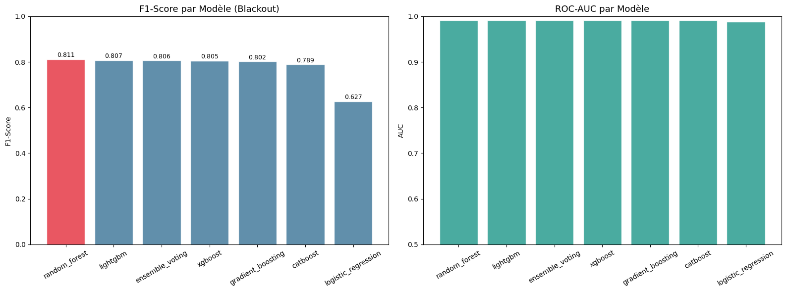
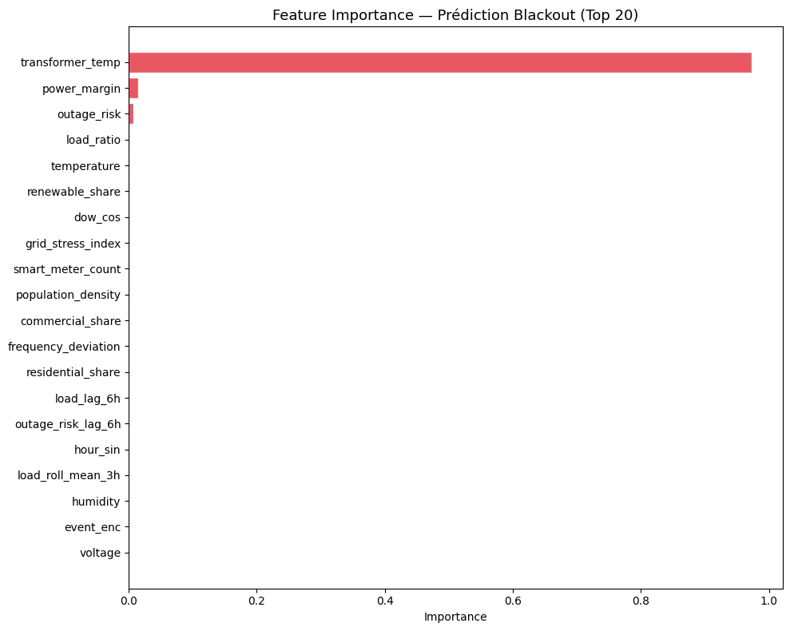
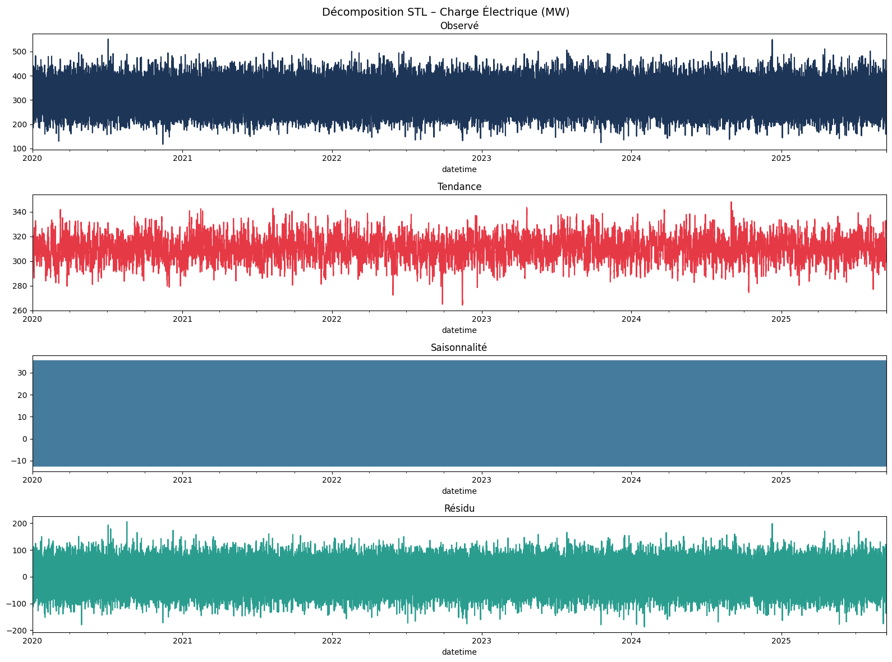
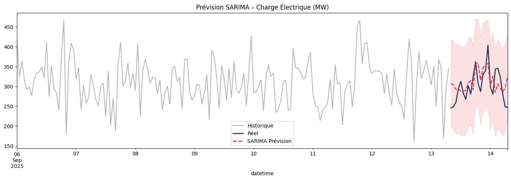
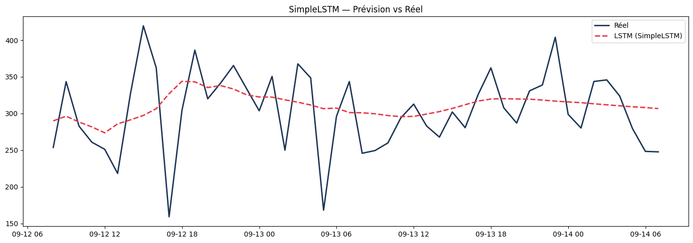

07 · Modélisation Prédictive — Machine Learning & Séries Temporelles#
CEET Smart Grid – Energy Blackout Prediction#
Objectif : Entraîner, évaluer et comparer plusieurs modèles pour :
Prédire les blackouts (classification binaire)
Prédire les surcharges (classification binaire)
Prévoir la demande énergétique (régression)
import sys, warnings
warnings.filterwarnings('ignore')
sys.path.insert(0, '../src')
import pandas as pd
import numpy as np
import matplotlib.pyplot as plt
import seaborn as sns
from sklearn.model_selection import train_test_split
from sklearn.metrics import classification_report, roc_curve, auc
import plotly.express as px
import plotly.graph_objects as go
from modeling import (run_blackout_modeling, run_overload_modeling,
run_demand_forecasting, get_classifiers, prepare_data,
get_feature_importance)
from feature_engineering import BLACKOUT_FEATURES, OVERLOAD_FEATURES, DEMAND_FEATURES, get_feature_matrix
from time_series import prepare_timeseries, test_stationarity, fit_sarima, SimpleLSTMNumpy
from utils import DATA_PROC, FIGURES
df = pd.read_csv(DATA_PROC / 'ceet_processed.csv', parse_dates=['datetime'])
print(f"Dataset : {df.shape}")
print(f"Blackout rate : {df['blackout'].mean()*100:.2f}%")
Dataset : (50000, 75)
Blackout rate : 3.95%
7.1 Prédiction des Blackouts — Comparaison de Modèles#
print("Lancement du pipeline de modélisation blackout...")
results_blackout = run_blackout_modeling(df)
print("\n=== CLASSEMENT DES MODÈLES (Blackout) ===")
cols = ['model','f1_score','roc_auc','recall','precision','accuracy']
avail_cols = [c for c in cols if c in results_blackout['results'].columns]
print(results_blackout['results'][avail_cols].to_string(index=False))
2026-06-14 10:47:37 | INFO | modeling | ============================================================
2026-06-14 10:47:37 | INFO | modeling | MODÉLISATION : PRÉDICTION BLACKOUT
2026-06-14 10:47:37 | INFO | modeling | ============================================================
2026-06-14 10:47:37 | INFO | modeling | Train : (40000, 44), Test : (10000, 44)
2026-06-14 10:47:37 | INFO | modeling | Distribution target (test) :
blackout
0 0.96
1 0.04
Name: proportion, dtype: float64
2026-06-14 10:47:37 | INFO | modeling | Entraînement : logistic_regression...
Lancement du pipeline de modélisation blackout...
2026-06-14 10:47:37 | INFO | modeling | F1=0.6272 | ROC-AUC=0.9876 | Recall=0.9924
2026-06-14 10:47:38 | INFO | modeling | Entraînement : random_forest...
2026-06-14 10:47:41 | INFO | modeling | F1=0.8107 | ROC-AUC=0.9911 | Recall=0.9975
2026-06-14 10:47:41 | INFO | modeling | Entraînement : gradient_boosting...
---------------------------------------------------------------------------
KeyboardInterrupt Traceback (most recent call last)
Cell In[2], line 2
1 print("Lancement du pipeline de modélisation blackout...")
----> 2 results_blackout = run_blackout_modeling(df)
3 print("\n=== CLASSEMENT DES MODÈLES (Blackout) ===")
4 cols = ['model','f1_score','roc_auc','recall','precision','accuracy']
File D:\Data_Science_Lab\Data_Project_Capstone_IBM\energy-grid-blackout-prediction\book\../src\modeling.py:203, in run_blackout_modeling(df)
201 for name, clf in classifiers.items():
202 use_scaler = name in ["logistic_regression", "svm"]
--> 203 metrics, pipeline = train_evaluate_classifier(
204 clf, name, X_train, X_test, y_train, y_test, use_scaler=use_scaler
205 )
206 results.append(metrics)
208 if metrics["f1_score"] > best_f1:
File D:\Data_Science_Lab\Data_Project_Capstone_IBM\energy-grid-blackout-prediction\book\../src\modeling.py:121, in train_evaluate_classifier(model, model_name, X_train, X_test, y_train, y_test, use_scaler)
118 pipeline = model
120 logger.info(f"Entraînement : {model_name}...")
--> 121 pipeline.fit(X_train, y_train)
122 y_pred = pipeline.predict(X_test)
124 try:
File D:\Data_Science_Lab\Data_Project_Capstone_IBM\venv\lib\site-packages\sklearn\base.py:1365, in _fit_context.<locals>.decorator.<locals>.wrapper(estimator, *args, **kwargs)
1358 estimator._validate_params()
1360 with config_context(
1361 skip_parameter_validation=(
1362 prefer_skip_nested_validation or global_skip_validation
1363 )
1364 ):
-> 1365 return fit_method(estimator, *args, **kwargs)
File D:\Data_Science_Lab\Data_Project_Capstone_IBM\venv\lib\site-packages\sklearn\ensemble\_gb.py:787, in BaseGradientBoosting.fit(self, X, y, sample_weight, monitor)
784 self._resize_state()
786 # fit the boosting stages
--> 787 n_stages = self._fit_stages(
788 X_train,
789 y_train,
790 raw_predictions,
791 sample_weight_train,
792 self._rng,
793 X_val,
794 y_val,
795 sample_weight_val,
796 begin_at_stage,
797 monitor,
798 )
800 # change shape of arrays after fit (early-stopping or additional ests)
801 if n_stages != self.estimators_.shape[0]:
File D:\Data_Science_Lab\Data_Project_Capstone_IBM\venv\lib\site-packages\sklearn\ensemble\_gb.py:883, in BaseGradientBoosting._fit_stages(self, X, y, raw_predictions, sample_weight, random_state, X_val, y_val, sample_weight_val, begin_at_stage, monitor)
876 initial_loss = factor * self._loss(
877 y_true=y_oob_masked,
878 raw_prediction=raw_predictions[~sample_mask],
879 sample_weight=sample_weight_oob_masked,
880 )
882 # fit next stage of trees
--> 883 raw_predictions = self._fit_stage(
884 i,
885 X,
886 y,
887 raw_predictions,
888 sample_weight,
889 sample_mask,
890 random_state,
891 X_csc=X_csc,
892 X_csr=X_csr,
893 )
895 # track loss
896 if do_oob:
File D:\Data_Science_Lab\Data_Project_Capstone_IBM\venv\lib\site-packages\sklearn\ensemble\_gb.py:489, in BaseGradientBoosting._fit_stage(self, i, X, y, raw_predictions, sample_weight, sample_mask, random_state, X_csc, X_csr)
486 sample_weight = sample_weight * sample_mask.astype(np.float64)
488 X = X_csc if X_csc is not None else X
--> 489 tree.fit(
490 X, neg_g_view[:, k], sample_weight=sample_weight, check_input=False
491 )
493 # update tree leaves
494 X_for_tree_update = X_csr if X_csr is not None else X
File D:\Data_Science_Lab\Data_Project_Capstone_IBM\venv\lib\site-packages\sklearn\base.py:1365, in _fit_context.<locals>.decorator.<locals>.wrapper(estimator, *args, **kwargs)
1358 estimator._validate_params()
1360 with config_context(
1361 skip_parameter_validation=(
1362 prefer_skip_nested_validation or global_skip_validation
1363 )
1364 ):
-> 1365 return fit_method(estimator, *args, **kwargs)
File D:\Data_Science_Lab\Data_Project_Capstone_IBM\venv\lib\site-packages\sklearn\tree\_classes.py:1404, in DecisionTreeRegressor.fit(self, X, y, sample_weight, check_input)
1374 @_fit_context(prefer_skip_nested_validation=True)
1375 def fit(self, X, y, sample_weight=None, check_input=True):
1376 """Build a decision tree regressor from the training set (X, y).
1377
1378 Parameters
(...)
1401 Fitted estimator.
1402 """
-> 1404 super()._fit(
1405 X,
1406 y,
1407 sample_weight=sample_weight,
1408 check_input=check_input,
1409 )
1410 return self
File D:\Data_Science_Lab\Data_Project_Capstone_IBM\venv\lib\site-packages\sklearn\tree\_classes.py:472, in BaseDecisionTree._fit(self, X, y, sample_weight, check_input, missing_values_in_feature_mask)
461 else:
462 builder = BestFirstTreeBuilder(
463 splitter,
464 min_samples_split,
(...)
469 self.min_impurity_decrease,
470 )
--> 472 builder.build(self.tree_, X, y, sample_weight, missing_values_in_feature_mask)
474 if self.n_outputs_ == 1 and is_classifier(self):
475 self.n_classes_ = self.n_classes_[0]
KeyboardInterrupt:
# Visualisation de la comparaison
res_df = results_blackout['results']
fig, axes = plt.subplots(1, 2, figsize=(16, 6))
bars = axes[0].bar(res_df['model'], res_df['f1_score'],
color=['#E63946' if i == 0 else '#457B9D' for i in range(len(res_df))],
edgecolor='white', alpha=0.85)
axes[0].set_title('F1-Score par Modèle (Blackout)', fontsize=13)
axes[0].set_ylabel('F1-Score')
axes[0].tick_params(axis='x', rotation=30)
axes[0].set_ylim(0, 1.0)
for bar, val in zip(bars, res_df['f1_score']):
axes[0].text(bar.get_x() + bar.get_width()/2, bar.get_height() + 0.01,
f'{val:.3f}', ha='center', fontsize=9)
if 'roc_auc' in res_df.columns:
axes[1].bar(res_df['model'], res_df['roc_auc'],
color='#2A9D8F', edgecolor='white', alpha=0.85)
axes[1].set_title('ROC-AUC par Modèle', fontsize=13)
axes[1].set_ylabel('AUC')
axes[1].tick_params(axis='x', rotation=30)
axes[1].set_ylim(0.5, 1.0)
plt.tight_layout()
plt.savefig(FIGURES / 'model_comparison_blackout.png', dpi=120, bbox_inches='tight')
plt.show()

7.2 Feature Importance du Meilleur Modèle#
best = results_blackout['best_model']
avail_feats = [f for f in BLACKOUT_FEATURES if f in df.columns]
# Tenter d'extraire l'estimateur sous-jacent
model_to_inspect = best
if hasattr(best, 'estimators_'):
# VotingClassifier → prendre le premier estimateur
model_to_inspect = best.estimators_[0]
fi_df = get_feature_importance(model_to_inspect, avail_feats, top_n=20)
if not fi_df.empty:
fig, ax = plt.subplots(figsize=(10, 8))
fi_sorted = fi_df.sort_values('importance')
colors = ['#E63946' if i >= len(fi_sorted)-3 else '#457B9D' for i in range(len(fi_sorted))]
ax.barh(fi_sorted['feature'], fi_sorted['importance'], color=colors, edgecolor='white', alpha=0.85)
ax.set_title('Feature Importance — Prédiction Blackout (Top 20)', fontsize=13)
ax.set_xlabel('Importance')
plt.tight_layout()
plt.savefig(FIGURES / 'feature_importance_blackout.png', dpi=120, bbox_inches='tight')
plt.show()

7.3 Prédiction des Surcharges#
results_overload = run_overload_modeling(df)
print("\n=== CLASSEMENT DES MODÈLES (Surcharge) ===")
avail_cols_ol = [c for c in ['model','f1_score','recall','precision'] if c in results_overload['results'].columns]
print(results_overload['results'][avail_cols_ol].to_string(index=False))
2026-06-10 19:51:05 | INFO | modeling | ============================================================
2026-06-10 19:51:05 | INFO | modeling | MODÉLISATION : PRÉDICTION SURCHARGE
2026-06-10 19:51:05 | INFO | modeling | ============================================================
2026-06-10 19:51:05 | INFO | modeling | Train : (40000, 30), Test : (10000, 30)
2026-06-10 19:51:05 | INFO | modeling | Distribution target (test) :
overload
1 0.825
0 0.175
Name: proportion, dtype: float64
2026-06-10 19:51:05 | INFO | modeling | Entraînement : logistic_regression...
2026-06-10 19:51:06 | INFO | modeling | F1=0.9921 | ROC-AUC=1.0 | Recall=0.9842
2026-06-10 19:51:06 | INFO | modeling | Entraînement : random_forest...
2026-06-10 19:51:09 | INFO | modeling | F1=1.0000 | ROC-AUC=1.0 | Recall=1.0000
2026-06-10 19:51:09 | INFO | modeling | Entraînement : gradient_boosting...
2026-06-10 19:51:48 | INFO | modeling | F1=1.0000 | ROC-AUC=1.0 | Recall=1.0000
2026-06-10 19:51:48 | INFO | modeling | Entraînement : xgboost...
2026-06-10 19:51:49 | INFO | modeling | F1=0.9995 | ROC-AUC=1.0 | Recall=0.9989
2026-06-10 19:51:49 | INFO | modeling | Entraînement : lightgbm...
2026-06-10 19:51:51 | INFO | modeling | F1=1.0000 | ROC-AUC=1.0 | Recall=1.0000
2026-06-10 19:51:51 | INFO | modeling | Entraînement : catboost...
2026-06-10 19:51:54 | INFO | modeling | F1=0.9996 | ROC-AUC=1.0 | Recall=0.9992
=== CLASSEMENT DES MODÈLES (Surcharge) ===
model f1_score recall precision
random_forest 1.0000 1.0000 1.0
gradient_boosting 1.0000 1.0000 1.0
lightgbm 1.0000 1.0000 1.0
catboost 0.9996 0.9992 1.0
xgboost 0.9995 0.9989 1.0
logistic_regression 0.9921 0.9842 1.0
7.4 Prévision de la Demande Énergétique#
results_demand = run_demand_forecasting(df)
print("\n=== MODÈLES DE FORECASTING (Demande) ===")
print(results_demand['results'][['model','rmse','mae','r2']].to_string(index=False))
2026-06-10 20:12:18 | INFO | modeling | ============================================================
2026-06-10 20:12:18 | INFO | modeling | MODÉLISATION : FORECASTING DE LA DEMANDE
2026-06-10 20:12:18 | INFO | modeling | ============================================================
2026-06-10 20:12:18 | INFO | modeling | Entraînement : ridge...
2026-06-10 20:12:19 | INFO | modeling | RMSE=33.4893 | MAE=26.7083 | R²=0.5572
2026-06-10 20:12:19 | INFO | modeling | Entraînement : random_forest_reg...
2026-06-10 20:12:46 | INFO | modeling | RMSE=32.8824 | MAE=26.1543 | R²=0.5731
2026-06-10 20:12:46 | INFO | modeling | Entraînement : xgboost_reg...
2026-06-10 20:12:47 | INFO | modeling | RMSE=32.6894 | MAE=25.9581 | R²=0.5781
2026-06-10 20:12:47 | INFO | modeling | Entraînement : lightgbm_reg...
2026-06-10 20:12:48 | INFO | modeling | RMSE=32.6025 | MAE=25.9084 | R²=0.5804
=== MODÈLES DE FORECASTING (Demande) ===
model rmse mae r2
lightgbm_reg 32.6025 25.9084 0.5804
xgboost_reg 32.6894 25.9581 0.5781
random_forest_reg 32.8824 26.1543 0.5731
ridge 33.4893 26.7083 0.5572
7.5 Analyse des Séries Temporelles (SARIMA + LSTM)#
ts = prepare_timeseries(df, target='total_load_mw', freq='h')
print(f"Série temporelle : {len(ts)} points")
# Test de stationnarité
stat_result = test_stationarity(ts, 'Charge Totale (MW)')
print("\n=== TEST ADF ===")
for k, v in stat_result.items():
print(f" {k:20s}: {v}")
2026-06-10 20:15:14 | INFO | time_series | Série temporelle : 50000 points | 2020-01-01 00:00:00 → 2025-09-14 07:00:00
Série temporelle : 50000 points
2026-06-10 20:15:27 | INFO | time_series | ADF Test – Charge Totale (MW): STATIONNAIRE (p=0.0000)
=== TEST ADF ===
ADF Statistic : -28.8095
p-value : 0.0
Lags : 57
Observations : 49942
Critical 1% : -3.4305
Critical 5% : -2.8616
Is stationary : True
# Décomposition saisonnière
from statsmodels.tsa.seasonal import seasonal_decompose
decomp = seasonal_decompose(ts, model='additive', period=24, extrapolate_trend='freq')
fig, axes = plt.subplots(4, 1, figsize=(16, 12))
decomp.observed.plot(ax=axes[0], title='Observé', color='#1D3557')
decomp.trend.plot(ax=axes[1], title='Tendance', color='#E63946')
decomp.seasonal.plot(ax=axes[2], title='Saisonnalité', color='#457B9D')
decomp.resid.plot(ax=axes[3], title='Résidu', color='#2A9D8F')
plt.suptitle('Décomposition STL – Charge Électrique (MW)', fontsize=14)
plt.tight_layout()
plt.savefig(FIGURES / 'ts_decomposition.png', dpi=120, bbox_inches='tight')
plt.show()

# SARIMA sur un sous-ensemble (100 dernières heures)
ts_small = ts[-200:]
try:
sarima_result = fit_sarima(ts_small, order=(1,1,1), seasonal_order=(1,1,1,24), n_forecast=24)
print("=== MÉTRIQUES SARIMA ===")
for k, v in sarima_result['metrics'].items():
print(f" {k.upper():10s}: {v:.4f}")
# Plot
fig, ax = plt.subplots(figsize=(14, 5))
sarima_result['train'].plot(ax=ax, label='Historique', color='gray', alpha=0.6)
sarima_result['test'].plot(ax=ax, label='Réel', color='#1D3557', linewidth=2)
sarima_result['forecast'].plot(ax=ax, label='SARIMA Prévision', color='#E63946',
linewidth=2, linestyle='--')
ax.fill_between(sarima_result['conf_int'].index,
sarima_result['conf_int'].iloc[:,0],
sarima_result['conf_int'].iloc[:,1],
alpha=0.15, color='#E63946')
ax.set_title('Prévision SARIMA – Charge Électrique (MW)')
ax.legend()
plt.tight_layout()
plt.savefig(FIGURES / 'sarima_forecast.png', dpi=120, bbox_inches='tight')
plt.show()
except Exception as e:
print(f"SARIMA non exécuté : {e}")
2026-06-10 20:17:19 | INFO | time_series | SARIMA(1, 1, 1) × (1, 1, 1, 24)...
2026-06-10 20:17:23 | INFO | time_series | AIC=1386.48 | BIC=1400.62
2026-06-10 20:17:23 | INFO | time_series | MAE=31.07 | RMSE=37.60 | MAPE=10.79%
=== MÉTRIQUES SARIMA ===
MAE : 31.0749
RMSE : 37.5950
MAPE : 10.7922

# SimpleLSTM
print("\nSimpleLSTM (fenêtre glissante + Ridge) :")
train_ts, test_ts = ts[:-48], ts[-48:]
lstm = SimpleLSTMNumpy(window=24, horizon=6)
lstm.fit(train_ts)
metrics_lstm = lstm.evaluate(test_ts, train_ts)
print(f" MAE : {metrics_lstm['mae']:.2f} MW")
print(f" RMSE : {metrics_lstm['rmse']:.2f} MW")
print(f" MAPE : {metrics_lstm['mape']:.2f}%")
forecast_lstm = lstm.predict(train_ts, n_steps=48)
fig, ax = plt.subplots(figsize=(14, 5))
ax.plot(test_ts.index, test_ts.values, label='Réel', color='#1D3557', linewidth=2)
ax.plot(test_ts.index[:len(forecast_lstm)], forecast_lstm,
label='LSTM (SimpleLSTM)', color='#E63946', linewidth=2, linestyle='--')
ax.set_title('SimpleLSTM — Prévision vs Réel')
ax.legend()
plt.tight_layout()
plt.savefig(FIGURES / 'lstm_forecast.png', dpi=120, bbox_inches='tight')
plt.show()
2026-06-10 20:17:35 | INFO | time_series | SimpleLSTM entraîné : window=24, horizon=6
SimpleLSTM (fenêtre glissante + Ridge) :
MAE : 38.80 MW
RMSE : 51.04 MW
MAPE : 14.58%

7.6 Détection d’Anomalies#
from anomaly_detection import combine_anomaly_detectors
df_with_anomalies, ae_model = combine_anomaly_detectors(df)
n_anom = df_with_anomalies['is_anomaly'].sum()
print(f"\n Anomalies détectées : {n_anom} ({n_anom/len(df)*100:.2f}%)")
print("\nTop 10 anomalies critiques :")
top = df_with_anomalies[df_with_anomalies['is_anomaly']==1].sort_values('anomaly_risk_score', ascending=False)
print(top[['datetime','region','city','total_load_mw','outage_risk','anomaly_risk_score']].head(10).to_string(index=False))
2026-06-10 20:18:49 | INFO | anomaly_detection | ============================================================
2026-06-10 20:18:49 | INFO | anomaly_detection | DÉTECTION D'ANOMALIES MULTI-MÉTHODES
2026-06-10 20:18:49 | INFO | anomaly_detection | ============================================================
2026-06-10 20:18:49 | INFO | anomaly_detection | Isolation Forest...
2026-06-10 20:18:52 | INFO | anomaly_detection | 2500 anomalies détectées (5% seuil)
2026-06-10 20:18:53 | INFO | anomaly_detection | AutoEncoder (PCA-based)...
2026-06-10 20:18:53 | INFO | anomaly_detection | AutoEncoder PCA : variance expliquée = 91.71%
2026-06-10 20:18:53 | INFO | anomaly_detection | Seuil reconstruction (p95) = 0.2643
2026-06-10 20:18:53 | INFO | anomaly_detection | 2500 anomalies détectées par AutoEncoder
2026-06-10 20:18:53 | INFO | anomaly_detection | DBSCAN (eps=0.8, min_samples=15)...
2026-06-10 20:18:56 | INFO | anomaly_detection | 1 clusters, 5359 points de bruit (anomalies)
2026-06-10 20:18:56 | INFO | anomaly_detection |
Anomalies finales (vote ≥ 2/3) : 2210 (4.42%)
2026-06-10 20:18:56 | INFO | anomaly_detection |
Anomalies par région :
n_anomalies total rate
region
Centrale 386 8397 4.60
Kara 339 8236 4.12
Lome 380 8237 4.61
Maritime 378 8270 4.57
Plateaux 363 8509 4.27
Savanes 364 8351 4.36
Anomalies détectées : 2210 (4.42%)
Top 10 anomalies critiques :
datetime region city total_load_mw outage_risk anomaly_risk_score
2022-02-03 22:00:00 Plateaux Sokode 385.02 100.00 76.69
2021-12-15 04:00:00 Centrale Sokode 230.12 92.18 76.26
2022-11-13 15:00:00 Lome Sokode 356.25 100.00 74.26
2020-11-06 23:00:00 Savanes Kara 350.32 100.00 73.83
2021-12-13 02:00:00 Centrale Lome 355.42 100.00 72.99
2020-07-03 19:00:00 Centrale Dapaong 551.42 100.00 72.77
2020-01-23 21:00:00 Lome Kara 347.47 100.00 72.26
2023-07-01 14:00:00 Plateaux Kpalime 366.35 100.00 72.24
2024-12-09 21:00:00 Centrale Tsevie 549.20 100.00 72.05
2023-04-10 21:00:00 Lome Kara 397.00 100.00 71.00
7.7 Résumé Final#
print("=" * 65)
print(" RÉSUMÉ DU PROJET CEET SMART GRID — MODÉLISATION")
print("=" * 65)
print(f"\n DATASET")
print(f" Observations : {len(df):,}")
print(f" Features : {df.shape[1]}")
print(f" Période : {df['datetime'].min().date()} → {df['datetime'].max().date()}")
print(f"\n CIBLES")
print(f" Blackouts : {df['blackout'].sum():,} ({df['blackout'].mean()*100:.2f}%)")
print(f" Surcharges : {df['overload'].sum():,} ({df['overload'].mean()*100:.2f}%)")
print(f"\n MEILLEURS MODÈLES")
print(f" Blackout : {results_blackout['best_name']}")
print(f" Surcharge : {results_overload['best_name']}")
print(f" Demande : {results_demand['best_name']}")
print(f"\n ANOMALIES")
print(f" Détectées : {n_anom} ({n_anom/len(df)*100:.2f}%)")
print(f"\n Modèles sauvegardés dans /models/")
print("Figures sauvegardées dans /reports/figures/")
=================================================================
RÉSUMÉ DU PROJET CEET SMART GRID — MODÉLISATION
=================================================================
DATASET
Observations : 50,000
Features : 75
Période : 2020-01-01 → 2025-09-14
CIBLES
Blackouts : 1,975 (3.95%)
Surcharges : 41,234 (82.47%)
MEILLEURS MODÈLES
Blackout : random_forest
Surcharge : random_forest
Demande : lightgbm_reg
ANOMALIES
Détectées : 2210 (4.42%)
Modèles sauvegardés dans /models/
Figures sauvegardées dans /reports/figures/